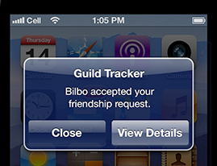

Push notifications overview¶
|  |
Get started¶
Get started with a tutorial¶
Build your first push-enabled app using an Apigee sample.
Find what you can do with it¶
A video and introduction.
See the prerequisites¶
Depending on your supported app platforms, you’ll need just a few things.
Build push support¶
Setting up push notifications support¶
Connect Apple or Google with Usergrid and your app.
Register your app¶
Register with Apple or Google.
Create a notifier¶
Your application uses this to send messages.
Register client devices¶
Your app code registers to receive notifications.
Send and manage notifications¶
You can do this from app code or the admin portal.
Learn more¶
Troubleshoot your push support¶
Things don’t work as you expect?